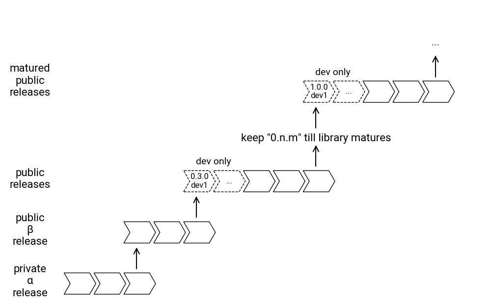

===============
Install
You can install drawlib with the following command. If your system uses python3 and pip3, use them instead.
$ pip install drawlib
After installation, you can check whether Drawlib was installed successfully with these commands:
$ python -m drawlib --version
software=0.1.24
api=0.1.24
$ drawlib --version
software=0.1.24
api=0.1.24
The Drawlib package also installs the drawlib command, which is useful for building many images.
This command calls the Drawlib libraries' script, equivalent to python -m drawlib.
For more details, refer to the relevant section in the foundation chapter.
In addition to the software (library) version, you can also see the API version. This is because Drawlib supports old APIs (previously released library APIs) in new versions for backward compatibility. You can specify the Drawlib API version like this:
$ python -m drawlib.v0_1 --version
software=0.1.24
api=0.1.24
Troubleshooting
Drawlib depends on matplotlib, which requires msvc-runtime on Windows.
If it is not automatically installed, you may encounter the following error when you try to draw:
ImportError: DLL load failed while importing _cext: The specified module could not be found
In this situation, please manually install msvc-runtime:
pip install msvc-runtime
If you encounter another error, please check if your Python environment is either too old or too new.
Versioning
Drawlib follows the versioning rule <major>.<minor>.<patch>.
- Major Version: Significant API change
- Minor Version: Minor API change
- Patch Version: Bug fixes, etc. No API change
If you intend to use drawlib with a long-term project, we recommend installing a specific version with requirements.txt.
drawlib == 0.1.*
sphinx == 7.2.*
sphinx-rtd-theme == 2.0.*
You can install or update these packages with the following command:
$ pip install -U -r requirements.txt
As you can see, the patch version is not specified, allowing bug fixes to be updated without any API changes. We recommend specifying not only the version of Drawlib but also the versions of the documentation building tools (like Sphinx) to ensure compatibility and stability.
Release policy
Drawlib's release process is as follows:
- 0.1.* : private alpha release
- 0.2.* : public beta release
- 0.n.* : public releases
- n.m.* : matured public releases
After the public release of 0.3, each version will have development releases, such as:
- 0.3.0.dev1
- 0.3.0.dev2
- 0.3.0.dev
As you can see, the patch version is 0, followed by dev<n>.
These are under-development testing releases for library developers and power users.
You can't install them via pip normally, but you can install them by specifying the exact version:
$ pip install drawlib == 0.3.0.dev1
After the under-development phase ends, an official version like "0.3.1" will be released.
Once Drawlib matures, we will move to version "1.0.*" and later. Here is a release plan image:
from drawlib.canvas import config, save
from drawlib.colors import Colors
from drawlib.fonts import FontRoboto
from drawlib.lines import line
from drawlib.shapes import arrow, chevron
from drawlib.text import text
from drawlib.types import ShapeStyle, ShapeTextStyle, TextStyle
def draw_versions(x: float, y: float, versions: list[str]):
width = 6
height = 5
corner_angle = 60
padding = 1
s1 = ShapeStyle(text_halign="left", text_valign="bottom")
s2 = ShapeStyle(text_halign="left", text_valign="bottom", line_style="dashed", fill_color=Colors.Transparent)
st1 = ShapeTextStyle(text_size=12, text_color=Colors.White, text_font=FontRoboto.ROBOTO_REGULAR)
st2 = ShapeTextStyle(text_size=12, text_font=FontRoboto.ROBOTO_REGULAR)
for i, version in enumerate(versions):
if len(versions) == 5 and i in [0, 1]:
chevron(
(x + (width + padding) * i, y),
width=width,
height=height,
corner_angle=corner_angle,
style=s2,
text=version,
textstyle=st2,
)
else:
chevron(
(x + (width + padding) * i, y),
width=width,
height=height,
corner_angle=corner_angle,
style=s1,
text=version,
textstyle=st1,
)
config(width=115, height=72)
ts = TextStyle(text_size=16, text_font=FontRoboto.ROBOTO_REGULAR)
text((7, 6), "private\nα\nrelease", style=ts)
text((7, 18), "public\nβ\nrelease", style=ts)
text((7, 30), "public\nreleases", style=ts)
text((7, 53), "matured\npublic\nreleases", style=ts)
# v0.1
draw_versions(15, 3, ["0.1.1", "...", "0.1.n"])
line((32, 9), (32, 14), arrowhead="->")
# v0.2
draw_versions(29, 15, ["0.2.1", "...", "0.2.n"])
line((46, 21), (46, 26), arrowhead="->")
text((50, 34), "dev only", style=TextStyle(text_size=14, text_font=FontRoboto.ROBOTO_REGULAR))
draw_versions(43, 27, ["0.3.0\ndev1", "...", "0.3.1", "...", "0.3.n"])
line((74, 33), (74, 38), arrowhead="->")
text((74, 39.5), 'keep "0.n.m" till library matures', style=TextStyle(text_font=FontRoboto.ROBOTO_REGULAR))
line((74, 42), (74, 47), arrowhead="->")
text((78, 55), "dev only", style=TextStyle(text_size=14, text_font=FontRoboto.ROBOTO_REGULAR))
draw_versions(71, 48, ["1.0.0\ndev1", "...", "1.0.1", "...", "1.0.n"])
line((102, 54), (102, 59), arrowhead="->")
text((102, 62), "...")
arrow(
(15, 67),
(113, 67),
tail_width=3,
head_width=7,
head_length=5,
head="->",
style=ShapeStyle(line_width=0),
text="Time",
textstyle=ShapeTextStyle(text_color=Colors.White, text_size=14, text_font=FontRoboto.ROBOTO_REGULAR),
)
save()

image1.png
Unfortunately, we do not plan to publish new fixes for older versions.
This means that after releasing version 0.n.0, we will not provide new patch releases for 0.<n-1>.*.
Virtual Environment
If you have multiple documentation projects on your machine, we recommend installing Drawlib in a Python virtual environment, such as venv or poetry.
We typically use venv for pure documentation projects and poetry for development projects that involve documentation.
Using virtual environments allows you to isolate Drawlib installations for different projects, which helps avoid conflicts with underlying library versions like matplotlib.